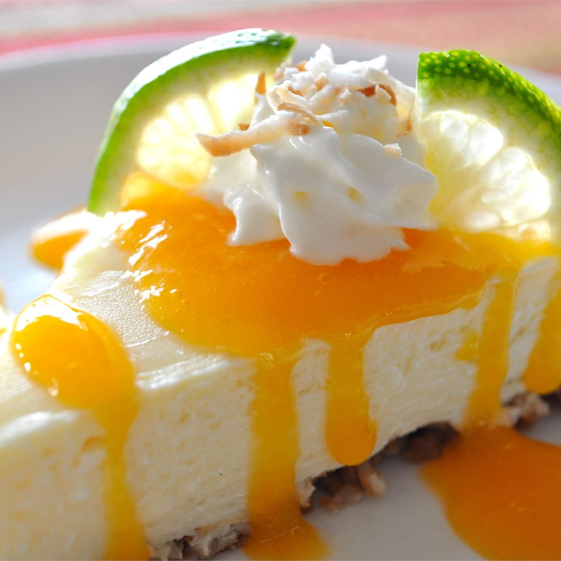

Coconut-Lime Cheesecake with Mango Coulis

Description
Tropical-inspired mango Key lime cheesecake featured a ginger-coconut crust and two divine layers topped off with a fresh mango coulis.
Ingredients
- Sweetened flaked coconut
- Butter
- Cream cheese
- Condensed milk
- Eggs
- Lime juice
- Coconut extract
- Fresh mango
Steps
-
Preheat the oven to 325 degrees F (165 degrees C). Lightly grease a 9-inch springform pan.
-
Combine coconut, gingersnap cookies, and melted butter in a bowl; mix until evenly moistened. Press cookie mixture into
the bottom and slightly up the sides of the prepared pan.
-
Bake crust in the preheated oven until browned and set, about 10 minutes. Set aside to cool.
-
Reduce oven heat to 300 degrees F (150 degrees C).
-
Beat softened cream cheese in a mixing bowl until smooth. With the beater set to medium-low, slowly pour condensed milk
into the bowl, mixing only until just blended and stopping to scrape the sides of the bowl as necessary.
-
Add eggs, one at a time, beating well after each addition; scrape the sides of the bowl as necessary.
-
Pour about 1/2 of the cream cheese batter into a separate bowl. Stir lime zest and lime juice into portion in the new
bowl; pour batter over crust in the springform pan, smoothing into an even layer.
-
Stir coconut extract through remaining cream cheese batter; pour over lime-flavored batter in the springform pan,
smoothing into an even layer.
-
Bake in the preheated oven until top of cheesecake springs back when gently pressed, about 45 minutes.
-
Turn oven heat off, but leave cheesecake inside with the oven door slightly ajar until the oven cools completely.
Refrigerate until thoroughly chilled.
-
Prepare mango coulis by puréeing mango with sugar in a blender until smooth. If too thick, add 1 teaspoon water at a
time, using just enough to make it pourable. Drizzle over cheesecake when plated.